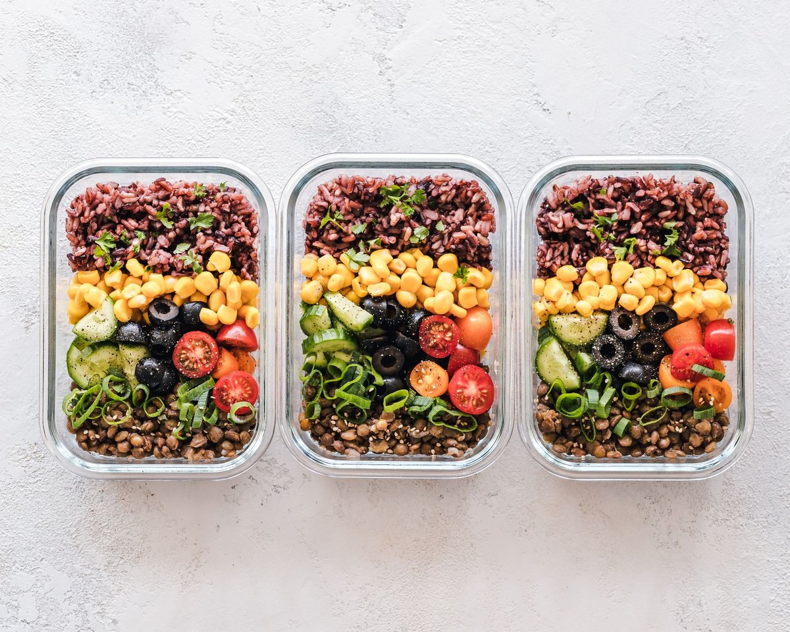

Stop Overcomplicating Your Gut Bacteria and Calorie Burn

Key takeaways
- Three years ago, I sat on my kitchen floor staring at a digital food scale, utterly defeated because the math was not mathing.
- That was the day I realized your gut bacteria could be changing how many calories you absorb, regardless of how strictly you track ev
- Track what feels sustainable and adjust gradually.
Three years ago, I sat on my kitchen floor staring at a digital food scale, utterly defeated because the math was not mathing. That was the day I realized your gut bacteria could be changing how many calories you absorb, regardless of how strictly you track every single bite.
I had spent months eating the exact same 1,800-calorie meal prep as my workout partner, yet my body held onto weight while his shed effortlessly. Science shows that our microflora acts like an internal metabolic gatekeeper, harvesting varying amounts of energy from the identical bowl of oatmeal.
It turns out, the ratio of two dominant bacterial phyla—Firmicutes and Bacteroidetes—determines your metabolic efficiency. Research shows that microbes from the Firmicutes family carry extra enzymes specifically designed to break down indigestible complex carbohydrates, turning them into absorbable calories that enter your bloodstream instead of passing through.
When you have an overgrowth of these super-efficient energy harvesters, your gut bacteria could be changing how many calories you absorb from standard daily meals by up to 150 calories a day. Check out this related healthy tip on how chronic stress shifts this delicate bacterial balance.
To shift the scale back in your favor, focus on increasing resistant starch like cooled purple sweet potatoes or overnight rolled oats. These starches bypass early digestion to feed Bacteroidetes, signaling your gut wall to release satiety hormones like GLP-1 naturally.
I also started paying attention to polyphenols from Michigan blueberries and dark cacao nibs, which act like precision fertilizers for lean-associated microbes. You can read another practical guide to dial in these colorful additions without spending hours in the kitchen.
Another major game-changer for my digestion was nighttime restoration, since gut lining repair happens during deep sleep cycles. That is when I added high-absorption Magnesium Glycinate into my evening wind-down routine to help relax my enteric nervous system and support deep rest.
Disclosure: This page may contain affiliate links. Finding peace with your metabolism means working with your body rather than waging war on your plate.
Take a look at this similar wellness insight if you struggle with digestive sluggishness after eating complex plant fibers. Once your flora adjusts, the bloating fades and genuine energy returns.
The 2-Minute Win
Cook a batch of organic white rice or red potatoes tonight, pop them in the fridge overnight, and reheat them tomorrow to double their resistant starch content instantly.
Consistency matters far more than dietary perfection when re-engineering your intestinal ecosystem. Use this blueprint to stay consistent with this without feeling restricted during family dinners or social outings.
Pro-Tip: Swap standard refined seed oils for extra-virgin olive oil rich in oleocanthal, which suppresses inflammatory microbes while promoting beneficial Bifidobacteria growth.
You can also explore more gut guides to build a sustainable daily protocol that feels natural and gentle on your body. Educational only — not medical advice.
Recommended Reading
- 3 Practical Ways to Handle Stress When Desperate For Heart Surgery For Their Baby, A Family Feels The Effects Of Pediatric Hospital Shortages
- The Ultimate Guide to Daily Hydration: Boost Energy & Wellness
- Unlock Your Best Sleep: Daily Habits for More Energy & Focus
More in gut
 gut
gutTaking Antibiotics? Sugar May Be Making The Damage Worse
Taking antibiotics? Sugar may be making the damage worse inside your gut. Learn how refined carbs fuel dysbiosis and how
Read article → gut
gutA Realistic Feeding Our Gut Microbiome For Better Health Plan
Discover a realistic guide to feeding our gut microbiome for better health. Simple, science-backed tips that fit your bu
Read article →Related posts
gutTaking Antibiotics? Sugar May Be Making The Damage Worse
Taking antibiotics? Sugar may be making the damage worse inside your gut. Learn how refined carbs fuel dysbiosis and how
Read article →gutA Realistic Feeding Our Gut Microbiome For Better Health Plan
Discover a realistic guide to feeding our gut microbiome for better health. Simple, science-backed tips that fit your bu
Read article →
gutWhat Nobody Tells You About Budget Meal Prep
Discover realistic budget meal prep strategies for US families that save money, reduce stress, and protect your family's
Read article →